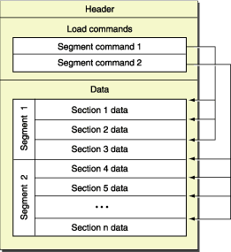

Mach-O文件

头部信息 mach_header
记录一些元信息
struct mach_header {
uint32_t magic;
cpu_type_t cputype;
cpu_subtype_t cpusubtype;
uint32_t filetype;
uint32_t ncmds;
uint32_t sizeofcmds;
uint32_t flags;
};
magic 表示大端还是小端
MH_MAGIC_64 // 64-bit big-endian magic
MH_CIGAM_64 // 64-bit little-endian magic
cputype cpu类型
CPU_TYPE_I386 => :i386,
CPU_TYPE_X86_64 => :x86_64,
CPU_TYPE_ARM => :arm,
CPU_TYPE_ARM64 => :arm64,
cpusubtype
具体的CPU类型，区分不同版本的处理器
filetype
MH_OBJECT => :object,
MH_EXECUTE => :execute,
MH_DYLIB => :dylib,
ncmds
number of load commands
sizeofcmds
size of load commands
更多参考：https://www.rubydoc.info/github/Homebrew/ruby-macho/MachO
Mach-O 中的 segment
一个目标文件中包含不同区域，每个区域被称为 segment
__TEXT
权限：只读，可执行。
__text
代码节，存放机器编译后的代码
__stubs
符号桩。本质上是一小段会直接跳入 lazybinding 的表对应项指针指向的地址的代码
用于辅助做动态链接代码（dyld）
__stub_helper
辅助函数。上述提到的lazybinding的表中对应项的指针在没有找到真正的符号地址的时候，都指向这
用于辅助做动态链接（dyld）
__cstring
去重后的c字符串
__objc_classname
objc 类名
__objc_methoname
objc 方法名称
__objcmethtype
objc 方法类名
__gcc_except_tab
//
__const
__swift4_typeref
__swift4_fieldmd
__swift4_types
__entitlements
__unwind_info
__DATA
权限：可读写、不可执行
__data
__bss
存储未初始化的静态量。比如：`static NSThread *_networkRequestThread = nil;`其中这里面的size表示应用运行占用的内存，不是实际的占用空间。所以计算大小的时候应该去掉这部分数据。
__common
存储导出的全局的数据。类似于static，但是没有用static修饰。比如KSCrash里面`NSDictionary* g_registerOrders;`, g_registerOrders就存储在__common里面
__objc_nlclslist
Objective-C 的 +load 函数列表，比 __mod_init_func 更早执行
__objc_data
__objc_ivar
ivar 指针，存储属性
__objc_superrefs
objc的超类
__objc_classrefs
__objc_selrefs
引用到的objc方法
__objc_const
objc常量。保存objc_classdata结构体数据。用于映射类相关数据的地址，比如类名，方法名等
__objc_imageinfo
镜像信息
__objc_protolist
objc 协议
__objc_classlist
__cfstring
__const
__got
存储引用符号的实际地址，类似于动态符号表，存储了`__nl_symbol_ptr`相关函数指针
__la_symbol_ptr
懒加载的函数指针地址（C代码实现的函数对应实现的地址）。和__stubs和stub_helper配合使用
__nl_symbol_ptr
__mod_init_func
模块初始化的方法。
__LINKEDIT
含了加载程序的『元数据』，比如函数的名称和地址。只读（r–） 包含需要被动态链接器使用的信息，包括符号表、字符串表、重定位项表等
Load Command
记录 如何加载每个 section 的信息
__PAGEZERO
Catch访问NULL指针的非法操作的段